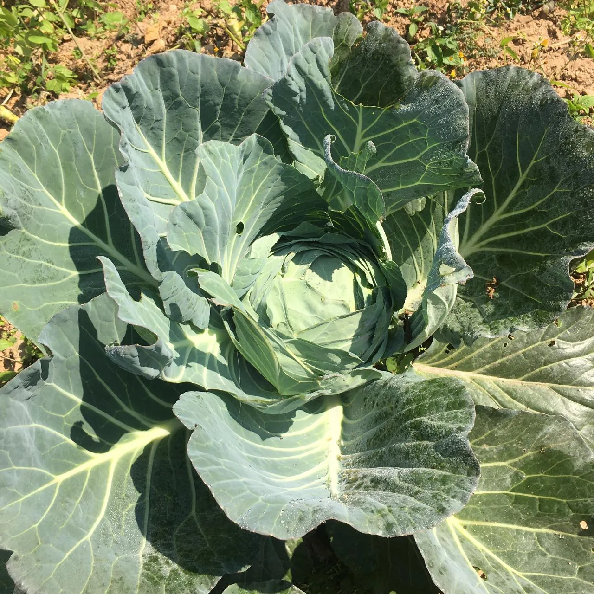
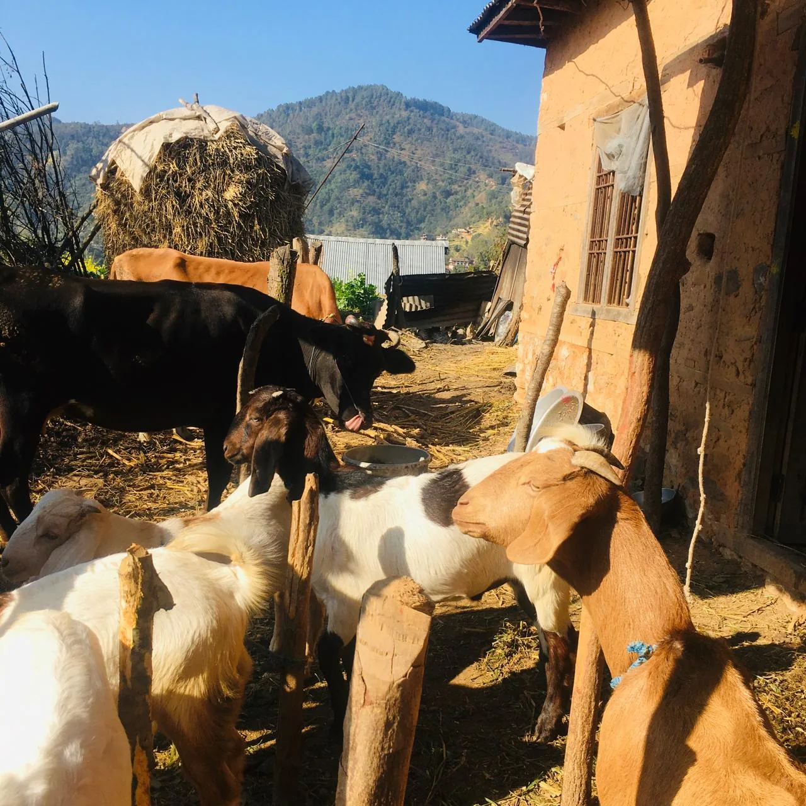
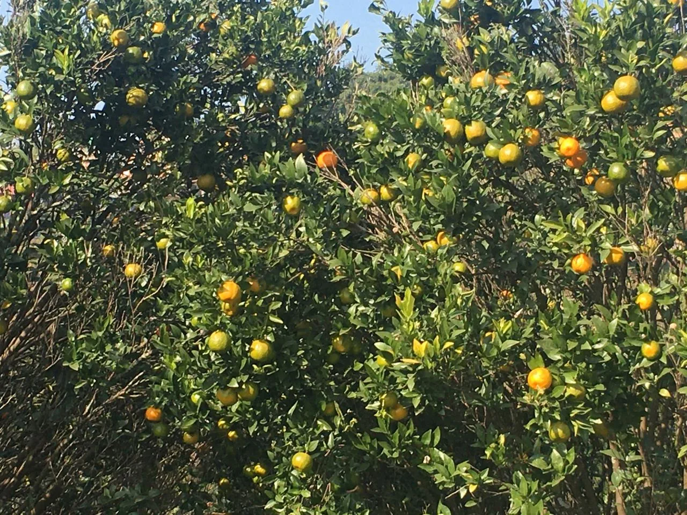
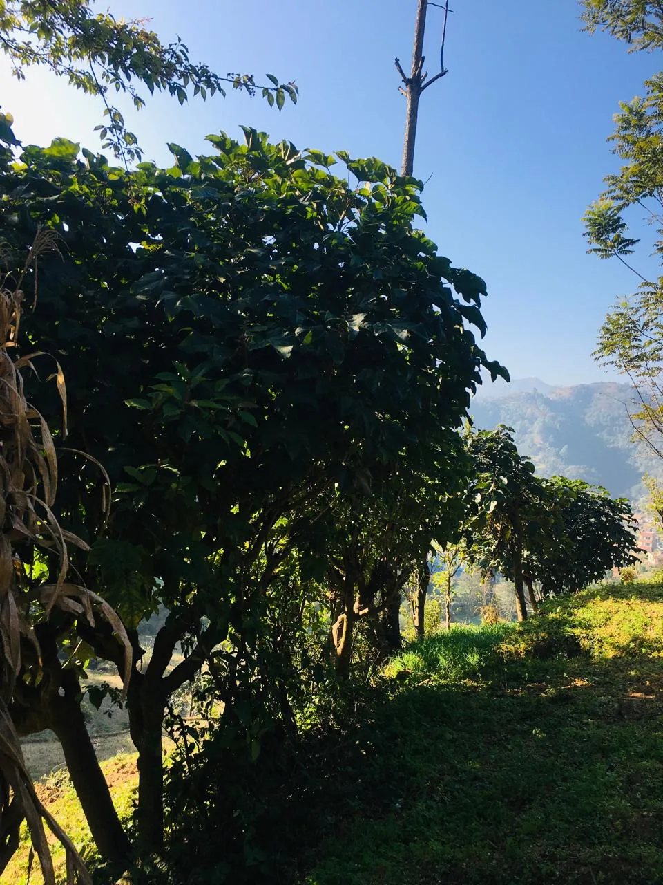
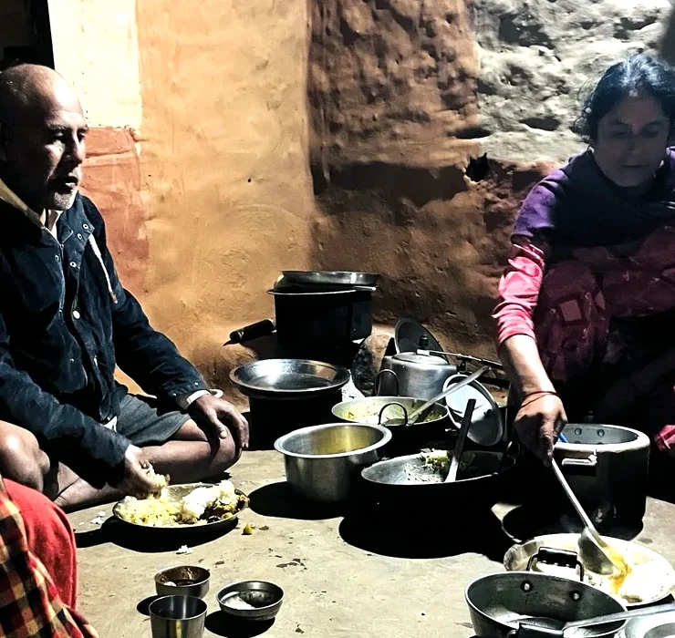
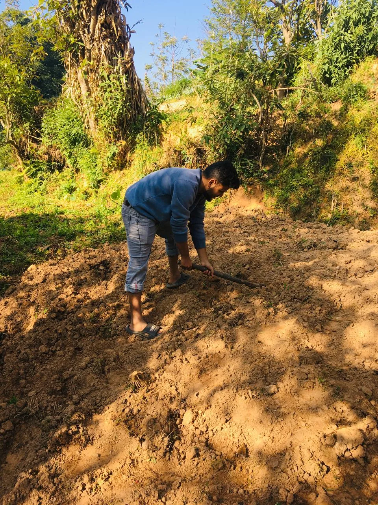
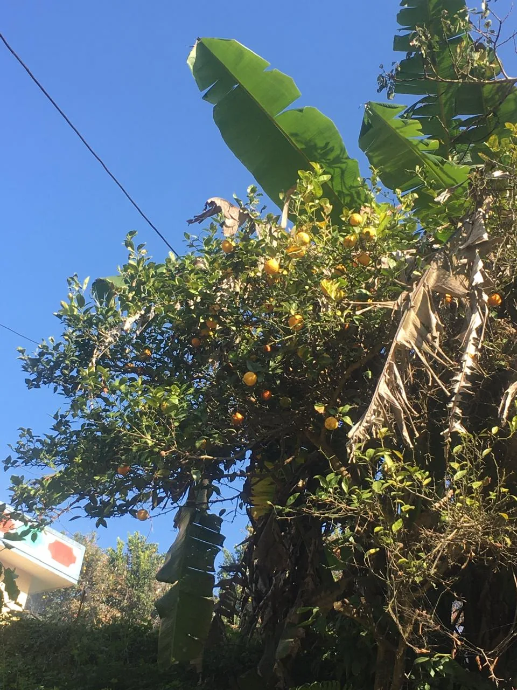
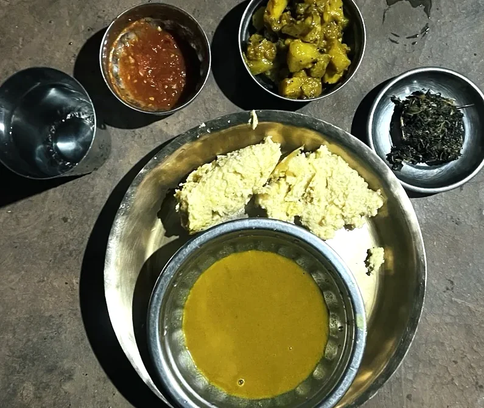

01 / AGRICULTURE
From Our Fields
Vegetables, fruits, grains and a variety of seasonal and non-seasonal crops.
Discover the beauty of farming, the warmth of a Nepali home and the simple pleasures of village life.
Located in Basdol, Banepa, Anju Multipurpose Agriculture Farm is a family-run farm built around agriculture, livestock and a connection to the land.
We welcome visitors to discover our farm, enjoy traditional home-cooked meals and experience the everyday rhythms of Nepali village life.
Discover the Experience ↗From the fields to the farmyard, agriculture is part of our family's everyday life.

Vegetables, fruits, grains and a variety of seasonal and non-seasonal crops.

Cows, goats and the everyday care behind farm life.

Farm-grown produce, milk, dairy products and goat meat available for direct enquiries and purchases.
We grow both organically and conventionally. Growing methods vary by crop and product.

A HOME AWAY FROM THE CITYExperience authentic Nepali village hospitality in our family home. Relax in peaceful surroundings, enjoy traditional home-cooked meals, and discover everyday life on our farm.
Contact us for homestay stays, availability, and information about visiting our farm.
Enquire About Our Homestay
Share the comfort of traditional Nepali food, including dhido and curry, prepared in the family kitchen. Experience traditional firewood cooking and the flavours of a home-cooked meal.
Meals and food preferences can be discussed when arranging your visit.
There is more to discover than the farm itself. Spend time with the land, the people and the traditions of the village.

Join everyday farm activities, learn about crops and take part in suitable tasks with the family.

Discover the surrounding village and visit the family's forest, subject to access and local conditions.

Share traditional meals, learn about local food and enjoy the warmth of a family home.
From early morning farm routines to quiet evenings, experience rural life at your own pace. Activities are flexible and participation is always your choice.
Visit Anju Multipurpose Agriculture Farm in Basdol, Banepa-12, Kavrepalanchowk, Bagmati Province, Nepal.
Google Maps location will be updated soon.Ask us about farm visits, traditional Nepali meals, and homestay accommodation.
Basdol, Banepa-12
Kavrepalanchowk, Nepal